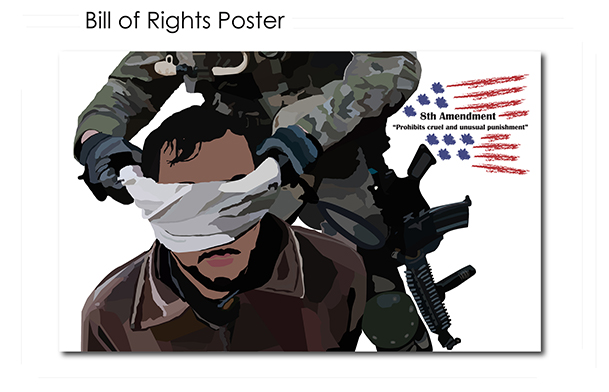

Savings 101

This project was mainly about promoting the East Cambridge Savings Bank Savings 101 seminar. They wanted a web page that would allow people access to the Savings 101 account, a poster detailing the information on the seminar they were holding, and a pamphlet that laid out information is a simple way.
Greeting Cards

This was an assignment where I had to create greeting cards. At the time a lot of my work dealt with typography, and it seems like wherever I had creative block I'd turn to type first to solve that. This piece demonstrates my love for typography, and how something so simple can be turned into something so elegant and cohesive.
Student ID

I was approached by my old highschool to redesign their ID cards. I thought it was a great opportunity to give each 'school' (C,R,L,S) it's own identity. I used colors and varied shapes to convey different personalities without going too off-book.
Senior Portfolio

Before I got out of highschool my graphic design teacher forced each senior to compile all the best work we'd done, and put it on a single CD so we would always be able to view our work. Of course one does not simply burn a disk, call it portfolio, and move on with the day; instead we did the full package design on our own personal CD portfolio.
"Isis at Home and Abroad"

This piece is a great example of my many interests coming together at once. The assignment was to make a newsletter using Adobe InDesign. I chose to focus on Isis, and it's influence as it is something that fascinates me.
Coke vs. Pepsi

This was a great project, and really opened my eyes to the world of Info Graphics. Often times we hear statistics but, never really know what they mean. This project really let me explore how to convey quantitative information while still focusing on design.
Be All Right

The health clinic in our highschool had opened up a new clinic, and employed the help of our graphic design program to come up with a new logo. I wanted a feeling of safety, reassurance, and health. The cogs in the head represent a state of mental health and balance.
Shop Inman by Moonlight

Every year a neighborhood near where I live in Cambridge MA has a special night in which all the stores stay open until twelve am, and people are encouraged to go out and support the businesses by shopping around, and attending events during that day.
"Prohibits Cruel and Unusual Punishment"
This piece was an assignment for one of my classes. We were to take one of the top ten amendments, and depict it as best we could. I chose the 8th amendment which prohibits cruel and unusual punishment for several reasons. The first reason is because often times this refers to torture that happens to POWs, and even more specifically terror suspects in the middle east. I am a strong believer in due process, and justice so to see these rights violated abroad raises red flags for me. The second reason I chose the 8th amendment was for it's visual impact. I felt that this would be a controversial piece, but would hold some water in the eyes of the everyday audience.